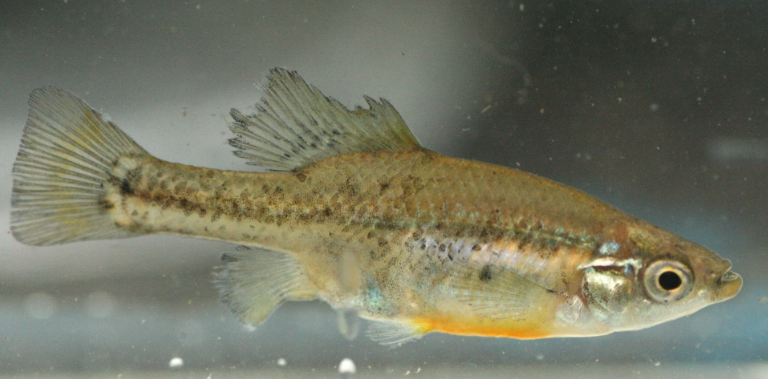

Systématique
- Ordre : Cyprinodontiformes
- Famille : Goodeidae
- Genre : Skiffia
- Espèce : S. lermae
- Auteur : Meek, 1902

Skiffia lermae est l'espèce type du genre Skiffia. Ce petit poisson vivipare matrotrophe est originaire du haut plateau mexicain. Il se caractérise par une morphologie typique des goodeidés de petite taille, avec un corps modérément haut et compressé latéralement.
Le mâle atteint environ 4 cm, tandis que la femelle peut mesurer jusqu'à 6 cm. La coloration est sobre : un fond gris-olive à beige avec des reflets argentés. Le trait le plus distinctif, bien que subtil, est une tache sombre à la base de la nageoire caudale, souvent en forme de croissant ou de triangle. Les mâles en période de parade peuvent présenter des reflets plus sombres, presque noirs, sur les nageoires dorsale et anale.
L'espèce est classée "En danger" (EN) par l'UICN. Bien que sa distribution soit un peu plus large que celle d'autres membres du genre, ses populations naturelles sont en déclin rapide à cause de la pollution industrielle, urbaine et de l'assèchement des zones humides du bassin du Rio Lerma.
Skiffia lermae est une espèce paisible et grégaire. Elle apprécie la vie en colonie où les interactions sociales sont nombreuses. Les mâles sont vifs et passent une grande partie de la journée à parader ou à se poursuivre sans agressivité réelle.
En aquarium, c'est un poisson qui reste proche de la végétation et du substrat. Il est moins "aventureux" en pleine eau que certains de ses cousins plus grands. Un aquarium bien planté est indispensable pour son bien-être, car il utilise les plantes comme zones de refuge et de recherche de micro-nourriture.
Mode : Vivipare matrotrophe.
Le processus de reproduction suit le schéma classique des Goodeinae. Les embryons sont nourris via des trophotaeniae à l'intérieur de l'ovaire. La gestation dure entre 55 et 60 jours en fonction de la température de l'eau.
Les portées sont généralement comprises entre 10 et 25 alevins. Comme c'est souvent le cas chez les Skiffia, les petits naissent à un stade de développement très avancé, mesurant plus de 10 mm. Ils sont immédiatement autonomes. Les parents délaissent généralement les alevins, ce qui permet de maintenir une population stable dans un bac spécifique bien planté sans intervention humaine majeure.
Dimorphisme sexuel : Le mâle possède un andropodium (encoche sur la nageoire anale) et une nageoire dorsale souvent plus large. La femelle est nettement plus grande et plus ronde à maturité.
Espérance de vie : 3 à 4 ans en aquarium.
L'espèce est endémique du bassin du Rio Lerma et des lacs associés comme le lac Pátzcuaro et le lac Zirahuén dans l'État de Michoacán. On la trouve également dans certains canaux et sources d'altitude. Son habitat privilégié est constitué d'eaux calmes, riches en détritus organiques et en végétation submergée.
L'eau est généralement alcaline et moyennement dure. Les températures saisonnières fluctuent, mais l'espèce préfère des eaux fraîches entre 18 et 22 °C. Elle est souvent trouvée en compagnie d'autres goodeidés comme Goodea atripinnis ou Alloophorus robustus.
Répartition

Origine naturelle :
- Mexique : Bassin du Rio Lerma (Michoacán, Jalisco, Guanajuato).
- Lacs Pátzcuaro, Zirahuén et Cuitzeo.
- Endémique du plateau central mexicain.
Bien que présente dans plusieurs lacs, la qualité de l'eau se dégrade partout, rendant les populations de plus en plus vulnérables.
Paramètres de maintenance
Température : 18 à 23 °C. Éviter les chaleurs prolongées au-dessus de 25 °C.
pH : 7,2 à 8,2.
GH : 10 à 20 °dGH.
Courant : Faible.
Volume conseillé : 60–80 L pour une petite colonie.
Régime alimentaire
Régime : Omnivore à tendance herbivore / algivore.
Dans la nature, il consomme du périphyton, des diatomées et des petits invertébrés. En aquarium, il accepte les flocons de bonne qualité, mais il est vital de lui fournir des compléments végétaux (spiruline) et des proies congelées ou vivantes (daphnies, artémias).